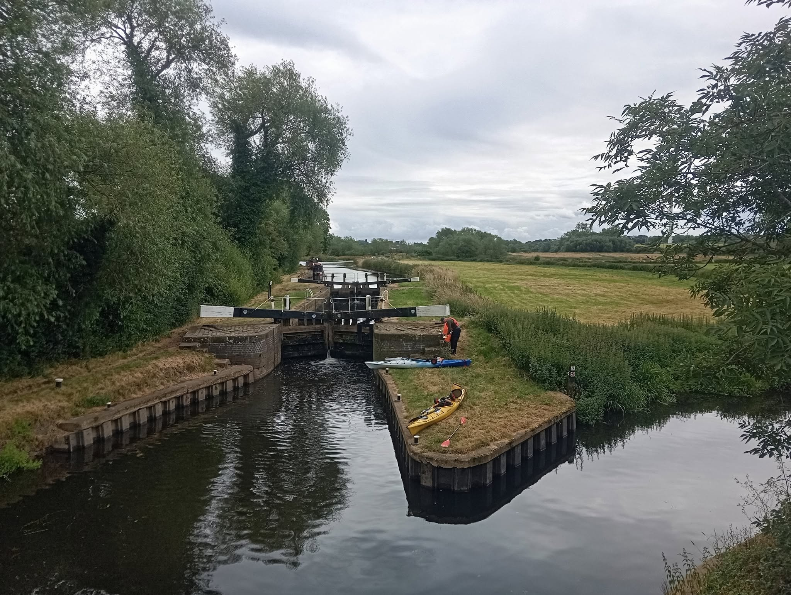
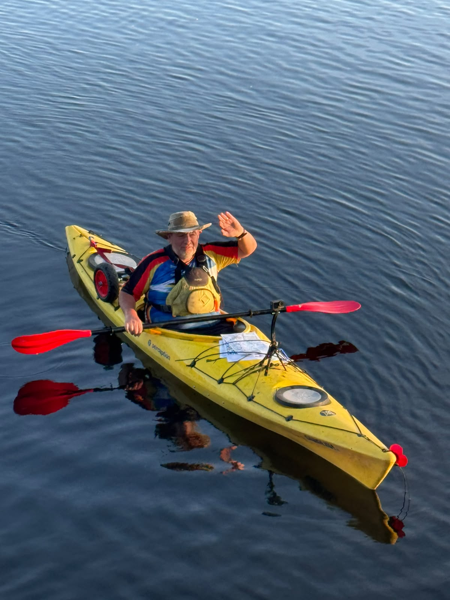

About Me
I’m not just passionate about paddling—I’m passionate about helping people discover what they’re capable of on the water.
My Paddling Story
For over 10 years, paddling has been more than a hobby, it's been my way of exploring rivers, building confidence, and helping others discover what they're capable of. I'm first aid qualified, FSRT trained, and hold an enhanced DBS check, and I paddle with three clubs while leading groups at two of them.One of the experiences I'm proudest of was helping a complete beginner grow into a confident paddler capable of taking on a 10-day, 150-mile charity expedition from London to Loughborough. Together, we raised money for the Sea Cadets and the Motor Neurone Disease Association, proving that incredible journeys often start with a first paddle.
More recently, I completed the entire River Soar in a single day - a demanding endurance challenge to raise money for Cancer Research UK.
Whether it's your very first time in a kayak or you're looking for your next adventure, my goal is simple: to make every trip safe, enjoyable, and memorable.
Book a Kayaking Experience
